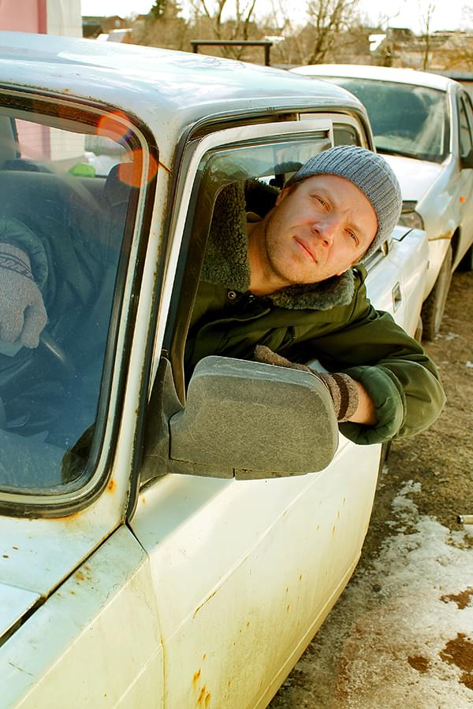

Про меня
Меня зовут Павел
Я родился и вырос в центре Калужской области, колыбели космонавтики: городе Калуге. В 2003 году окончил среднюю школу № 7 г.Калуги, проявляя особый интерес к техническим наукам, в особенности к математике и информатике. После окончания школы поступил в высшее учебное заведение на физико-математический факультет, где большое внимание уделял курсу "Информационные технологии и программирование". Изучал такие языки программирования как: Assembly(Ассемблер), Delphi, Pascal, которые послужили основой увлечения программированием.
С 2010 года прохожу службу в правоохранительных органах на должности "Копьютерный эксперт". В мои обязанности входит исследование компьютерной техники, мобильных устройств и другой техники на наличие различной информации(в явном и неявном виде). С 2020 года приступил к изучению материалов по специальности "Web-разработчик" на онлайн-платформах и используя научную литературу, тем самым освежив знания из университета и получая новую информацию. Постоянно осваиваю новые технологии и не останавливаюсь на достигнутом.
С 2010 года прохожу службу в правоохранительных органах на должности "Копьютерный эксперт". В мои обязанности входит исследование компьютерной техники, мобильных устройств и другой техники на наличие различной информации(в явном и неявном виде). С 2020 года приступил к изучению материалов по специальности "Web-разработчик" на онлайн-платформах и используя научную литературу, тем самым освежив знания из университета и получая новую информацию. Постоянно осваиваю новые технологии и не останавливаюсь на достигнутом.
Frontend-разработка
Знаю и применяю доступные технологии разработки web-приложений
Backend-разработка
Имею знания по основам PHP, взаимодействию с базами данных по средствам системы MySQL
Компьютерное исследование
Исследование информации в явном и не явном виде на различных устройствах